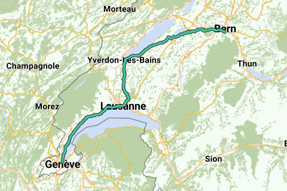
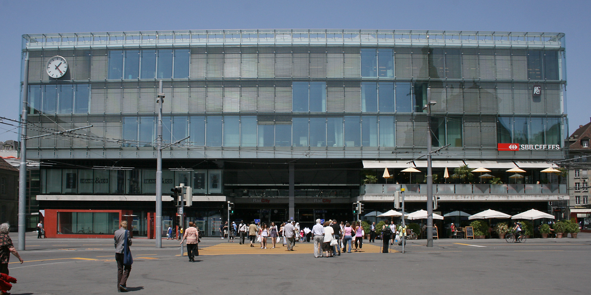

Comment se rendre à Berne
Pour rejoindre Berne depuis Genève, plusieurs moyens de transport sont possibles. Grâce aux liaisons régulières et à la proximité des deux villes, le trajet est simple à organiser.
En voiture
En voiture, le trajet fait environ 160 km et prend autour de 1 h 45, selon la circulation.
Il n’y a pas de péage ponctuel sur l’autoroute, mais une vignette autoroutière annuelle de 40 CHF est nécessaire pour l’emprunter.
Il faut aussi prévoir le coût du carburant et du stationnement à Berne. (Informations sur la vignette)

En train
Le train est généralement le moyen le plus simple :
le trajet dure environ 1 h 40 et des liaisons directes partent régulièrement de Genève.
prix dépend de la date et du billet choisi ; compte environ 25 à 55 CHF l’aller. Les horaires et tarifs exacts sont à vérifier sur le site des CFF.
En bus ou en car
Le bus ou le car peut être une autre possibilité selon les dates et les lignes disponibles.
Il est conseillé de comparer les horaires et les prix avant le départ.
